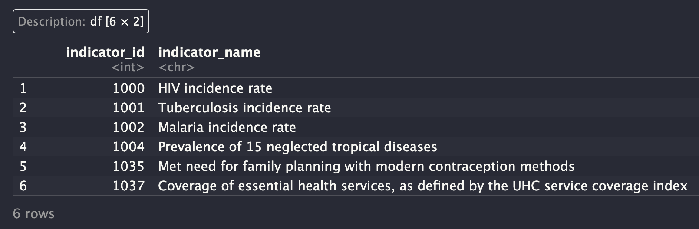
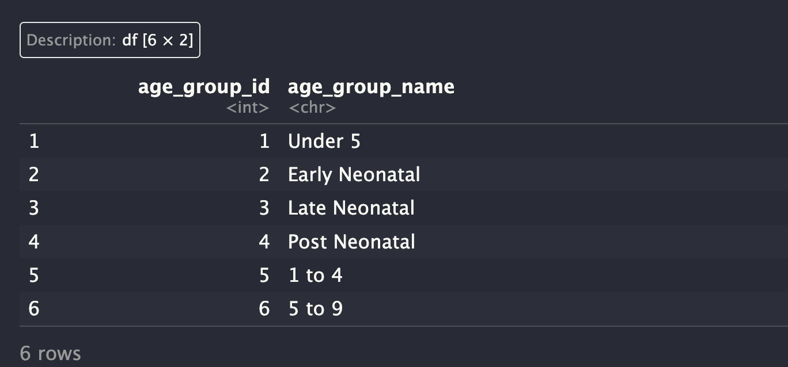
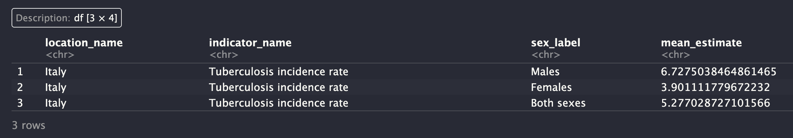

?hmsidwR::gho_lifetablesAppendix A — Life Tables, Markov Chain and APIs
A.1 Life Tables and Life Expectancy
Back in the 1700s the Swiss mathematician and physicist Daniel Bernoulli (1700 - 1782) developed the use of a life table model by differentiating life tables based on specific causes of death.1
Originally made by the English scientist John Graunt (1620-1674), for the analysis of the mortality of the population of London and the impact of different diseases. Life tables contain fundamental statistics for the calculation of probabilities of deaths and the computation of life expectancy at birth and at different ages.
A.1.1 Life Table Components
More recent life tables are standardized to be used for a population of 100 000 at age 0.
The probability of survival is given by: p_x=1-q_x
Let’s start constructing a life table
The Global Life Tables are included in the {hmsidwR} package as gho_lifetables dataset. This dataset has been released by the WHO, and contains various indicators.
The construction of the Global Life Tables takes consideration of age-specific mortality patterns, which is the main improvements made on life tables construction since the first set of model life tables published by the United Nations in 1955, see2 for more information about a detailed procedure.
To have a look at the package documentation for this dataset, use:
library(tidyverse)
hmsidwR::gho_lifetables %>%
count(indicator) %>%
select(-n)
#> # A tibble: 7 × 1
#> indicator
#> <chr>
#> 1 Tx
#> 2 ex
#> 3 lx
#> 4 nLx
#> 5 nMx
#> 6 ndx
#> 7 nqxThe indicator of interest for re-building a life table are:
lx- number of people left alive at age xage
These two key elements are crucial for building the life tables.
lx <- hmsidwR::gho_lifetables %>%
distinct() %>%
filter(
indicator == "lx",
year == "2019"
)x <- lx %>%
filter(sex == "female") %>%
select(x = age)
lx_f <- lx %>%
filter(sex == "female") %>%
select(lx = value)
lx_m <- lx %>%
filter(sex == "male") %>%
select(lx = value)The probability of survival is calculated as follow:
p_x = \frac{l_x}{l_{x+1}}
px <- lx_f$lx / lag(lx_f$lx)data.frame(
x,
lx = round(lx_f),
dx = round(c(-diff(lx_f$lx), 0)),
px,
qx = 1 - lead(px),
Lx = c(
(lx_f$lx[1] + (lx_f$lx[2])) / 2,
5 * (lx_f$lx[-1] + lead(lx_f$lx[-1])) / 2
)
) %>%
head()
#> x lx dx px qx Lx
#> 1 <1 100000 2584 NA 0.025843406 98707.83
#> 2 01-04 97416 915 0.9741566 0.009393050 484790.72
#> 3 05-09 96501 366 0.9906069 0.003790526 481588.68
#> 4 10-14 96135 249 0.9962095 0.002588600 480052.07
#> 5 15-19 95886 305 0.9974114 0.003185671 478666.28
#> 6 20-24 95581 399 0.9968143 0.004179281 476903.98hmsidwR::gho_lifetables %>%
distinct() %>%
mutate(indicator = gsub(" .*", "", indicator)) %>%
filter(
indicator == "nLx",
year == "2019",
sex == "female"
) %>%
head()
#> # A tibble: 6 × 5
#> indicator year age sex value
#> <chr> <dbl> <ord> <chr> <dbl>
#> 1 nLx 2019 <1 female 97857.
#> 2 nLx 2019 01-04 female 387467.
#> 3 nLx 2019 05-09 female 481589.
#> 4 nLx 2019 10-14 female 480052.
#> 5 nLx 2019 15-19 female 478666.
#> 6 nLx 2019 20-24 female 476904.A.1.2 Life Expectancy
Life expectancy is the expected number of years a person will live, based on current age and prevailing mortality rates. There are several methods to calculate life expectancy, but one common approach is to use the actuarial life table, which is a statistical table that provides the mortality rates for a population at different ages. The following steps can be used to calculate life expectancy using a life table:
Identify the relevant mortality rates for the population and time period of interest. Calculate the probability of surviving to each age, given the mortality rates. Multiply the probability of surviving to each age by the remaining life expectancy at that age to obtain the expected number of years of life remaining at each age. Sum the expected number of years of life remaining at each age to obtain the total life expectancy. Note that life expectancy is a statistical estimate and can be influenced by many factors, such as lifestyle, health, and environmental factors, so actual individual life expectancy can vary widely.
Here are some key references for calculating life expectancy:
United Nations World Population Prospects - The UN provides detailed life tables and population data, including life expectancy, for countries and regions around the world.
Centers for Disease Control and Prevention (CDC) - The CDC provides life tables for the United States, as well as information on how life expectancy is calculated and factors that affect it.
World Health Organization (WHO) - The WHO provides information on global health and life expectancy, including data and reports on trends in life expectancy and mortality.
Actuarial Science textbooks - Books such as “Actuarial Mathematics” by Bowers, Gerber, Hickman, Jones, and Nesbitt, or “An Introduction to Actuarial Mathematics” by Michel Millar, provide comprehensive coverage of the methods and mathematics used in calculating life expectancy.
Journal articles - Articles in actuarial and demographic journals, such as the North American Actuarial Journal or Demographic Research, often provide in-depth coverage of the latest research and methods for calculating life expectancy.
A.2 Markov Chain
A Markov chain is a stochastic model describing a sequence of possible events in which the probability of each event depends only on the state attained in the previous event. The state space of a Markov chain is the set of all possible states of the system. The transition probabilities are the probabilities of moving from one state to another. The transition matrix is a square matrix that describes the transition probabilities between states.
The code for this replication of the Markov Chain is from Dobrow - Bayesian analysis of infectious diseases book (chapter4). It shows clearly how to create a Markov chain and calculate the transition probabilities.
set.seed(000)
markov <- function(init, mat, n, labels) {
if (missing(labels)) labels <- 1:length(init)
simlist <- numeric(n + 1)
states <- 1:length(init)
simlist[1] <- sample(states, 1, prob = init)
for (i in 2:(n + 1)) {
simlist[i] <- sample(states, 1, prob = mat[simlist[i - 1], ])
}
labels[simlist]
}P <- matrix(c(.51, .49, .49, .51),
nrow = 2, ncol = 2, byrow = TRUE
)
init <- c(1, 0)markov(init = init, mat = P, n = 100)# Define the number of transitions
n_transitions <- 10000
# Simulate Markov chain
simulated_chain <- markov(init, P, n_transitions)
# Calculate the transition probabilities
transition_counts <- table(
simulated_chain[-1],
simulated_chain[-(n_transitions + 1)]
)
transition_probabilities <- transition_counts / rowSums(transition_counts)
transition_probabilities
#>
#> 1 2
#> 1 0.5140224 0.4859776
#> 2 0.4844249 0.5155751# Calculate prior probabilities
prior_probabilities <- table(
simulated_chain[-n_transitions]) / n_transitions
prior_probabilities
#>
#> 1 2
#> 0.4992 0.5008# Calculate posterior probabilities
posterior_probabilities <- transition_probabilities %*% prior_probabilities
posterior_probabilities
#>
#> [,1]
#> 1 0.4999776
#> 2 0.5000249A.3 Collecting Data with APIs
Collecting data for research analysis involves selecting sources and methods to optimize computational time when downloading and reading files. Once the data are prepared and ready to use, an additional step is required to make them suitable for the selected model. The source of the data is a critical variable. Generally, data can be downloaded using an API (application programming interface), which allows users to access data directly from the source through specified back-end computations.
There are alternatives to using an API; data can be downloaded directly to a computer or loaded through library packages. Available files are usually provided in various formats, such as delimited files (.csv), spreadsheets (.xls), JSON files (.json), and others. Below is an example of how to use an API to download a file directly to your computer.
library(httr)
url <- ""
httr::GET(url = url)A.3.1 Download Data with APIs
A.3.1.1 IHME Data APIs
Head over https://ghdx.healthdata.org/ihme-api to get access to the IHME API’s page. The page provides IHME APIs for Sustainable Development Goals (SDG) data. Then, click on https://api.healthdata.org/sdg to login and request an API key. More information on the methodology and data can be found at https://www.gatesfoundation.org/goalkeepers/report/2024-report/data-sources/#ExploretheData.
Load necessary libraries:
library(httr)
library(jsonlite)
library(tidyverse)The IHME API provides the following queries. These queries might be updated in the future, so it is important to check the API documentation for the most recent queries.
SDG Query Input:
- GetGoal
- GetIndicator
- GetTarget
- GetLocation
- GetAgeGroup
- GetScenario
- GetSex
- GetResultsByTarget
Query Input for Results:
- GetResultsByTarget
- GetResultsByIndicator
- GetResultsByLocation
- GetResultsByYear
Use the function gbd_get_data to download data from the IHME API. The function requires the following arguments in quotation marks:
The
urlwhere to download the data, such as:"https://api.healthdata.org/sdg/v1"An
API key= “YOUR-KEY”A
sdg-endpoint, such as:“GetResultsByLocation?location_id=86&indicator_id=1002&year=2019”
The function returns a data frame with the results.
gbd_get_data <- function(url, key, sdg) {
library(httr)
library(jsonlite)
url <- paste0(url, "/", sdg)
headers <- c("Authorization" = key)
res <- GET(url, add_headers(headers))
data <- fromJSON(rawToChar(res$content))
data <- data$results
}Build the query to download results by adding specification of the data. Let’s start with:
GetIndicator
indicator <- gbd_get_data(
url = "https://api.healthdata.org/sdg/v1",
key = "YOUR-KEY",
sdg = "GetIndicator"
)As an example, let’s see the first 6 indicators.
library(tidyverse)
indicator %>%
select(indicator_id, indicator_name) %>%
arrange(indicator_id) %>%
head()
Then use the indicator_id to download the data for a specific indicator.
agegroup <- gbd_get_data(
url = "https://api.healthdata.org/sdg/v1",
key = "YOUR-KEY",
sdg = "GetAgeGroup"
)
agegroup %>%
select(age_group_id, age_group_name) %>%
arrange(age_group_id) %>%
head()
dat19 <- gbd_get_data(
url = "https://api.healthdata.org/sdg/v1",
key = "YOUR-KEY",
sdg = "GetResultsByIndicator?indicator_id=1001&location_id=86&year=2019"
)
dat19%>%
select(location_name, indicator_name, sex_label, mean_estimate)
The same data can be downloaded using the httr package. The following code downloads the data for the indicator with indicator_id = 1001, location_id = 86, and year = 2019.
We can use the GET() function with this url = https://api.healthdata.org/sdg/v1/GetResultsByIndicator?indicator_id=1001&location_id=86&year=2019
headers <- c("Authorization" = "YOUR-KEY")
res <- GET(url= url,
add_headers(headers))
res$content%>%
rawToChar() %>%
fromJSON()An advanced version of the gbd_get_data() function can be found in the {hmsidwR} package. The function hmsidwR::gbd_get_data() allows the user to endpoint customisation, instead of using sdg argument with the long query string, an endpoint is used to specify the starting point of the quesry, such as GetResultsByIndicator. Then, the user can specify the indicator_id, location_id, and year to download the data for specific indicator, location, and year.
The function requires the arguments to be within quotation marks:
hmsidwR::gbd_get_data(
url = "https://api.healthdata.org/sdg/v1",
key = "YOUR-KEY",
endpoint = "GetResultsByIndicator",
indicator_id = "1001",
location_id = "86",
year = "2019"
)The output is still the same as Figure A.4 in the previous example.
A.3.2 Package References
The {hmsidwR} package is available at https://github.com/Fgazzelloni/hmsidwR. The package provides data and functions to support this book.
Download the package from CRAN or for the development version use GitHub:
# Download from CRAN
install.packages("hmsidwR")
# Download from GitHub
# install.packages("devtools")
devtools::install_github("Fgazzelloni/hmsidwR")“Life Table - an Overview | ScienceDirect Topics,” n.d., https://www.sciencedirect.com/topics/medicine-and-dentistry/life-table.↩︎
“Modified Logit Life Table System: Principles, Empirical Validation, and Application: Population Studies: Vol 57, No 2,” n.d., https://www.tandfonline.com/doi/abs/10.1080/0032472032000097083.↩︎